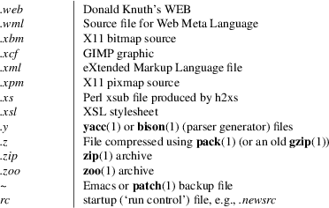

suffixes − list of file suffixes
It is customary to indicate the contents of a file with the file suffix, which (typically) consists of a period, followed by one or more letters. Many standard utilities, such as compilers, use this to recognize the type of file they are dealing with. The make(1) utility is driven by rules based on file suffix.
Following is a list of suffixes which are likely to be found on a Linux system.

General UNIX conventions.
This list is not exhaustive.
file(1), make(1)